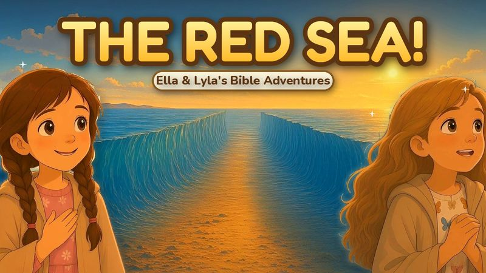
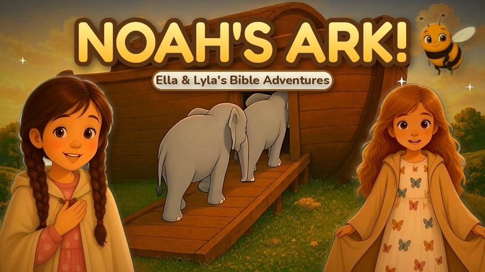
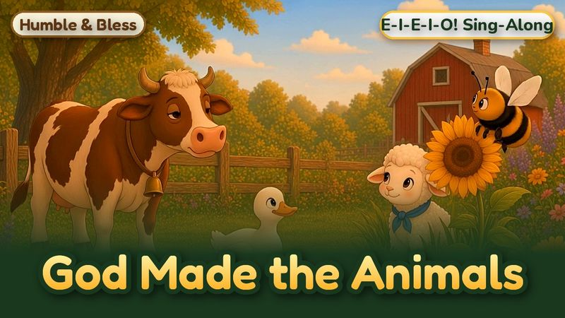
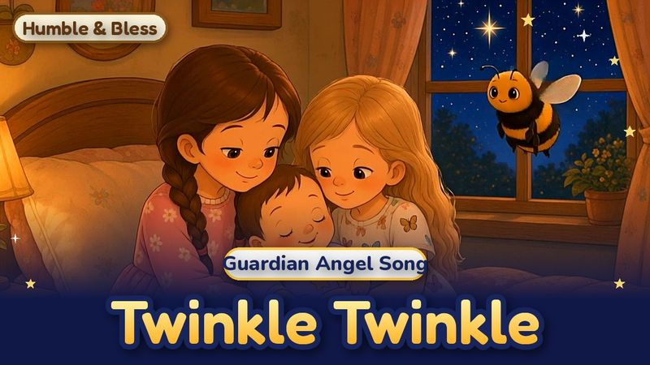
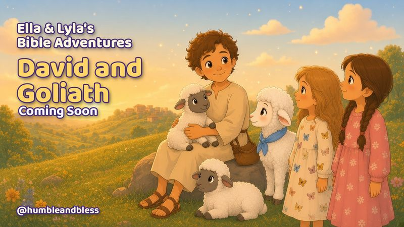
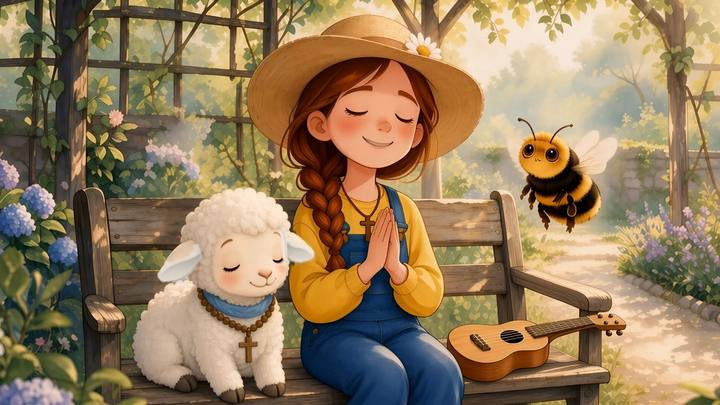

Humble & Bless
Little hearts buzzing with God’s love.
Spreading the love and word of Jesus through joyful, family-friendly cartoon videos, songs, prayers and Bible stories, just for kids.
Newest videos




Step Inside the Story
Ella and Lyla step inside Bible stories and see them through a child’s eyes, just for kids.
-
 Episode 1
Episode 1The First Christmas
Ella and Lyla land on the road to Bethlehem, help get the stable ready and whisper, “Welcome, baby Jesus.”
Watch The First Christmas (opens YouTube in a new tab) -
Noah’s Ark
Pitter-patter, here comes the rain! Ella and Lyla meet Noah, see God’s animals march in two by two, and find the rainbow of God’s promise.
Watch Noah’s Ark (opens YouTube in a new tab) -
Moses and the Red Sea
Whoosh, the waters part! Ella and Lyla see God make a dry path right through the sea.
Watch Moses and the Red Sea (opens YouTube in a new tab) -

Episode 4David and Goliath
Ella and Lyla meet a young shepherd named David, who cares for his sheep and trusts God with all his heart.
Subscribe on YouTube (opens YouTube in a new tab)

Sing, pray and grow closer to Jesus
Humble & Bless makes gentle Catholic cartoons, sing-alongs, Bible adventures and calm prayers just for kids. Every prayer has the words on screen, so little ones can pray right along: the Sign of the Cross, the Hail Mary, Rosary decades, bedtime prayers and more.
We hope every video helps a child discover the beauty of Jesus, one little story at a time.

Friends in the prayer garden
Gracie the gardener
Our cheerful gardener, with a daisy on her straw hat and a ukulele.
Honey the Bumblebee
A round, friendly bee with a happy “Bzzz!”
Pip the Lamb
A fluffy little boy lamb with a soft blue collar.
Ella
Loves daisies, Bible stories and praying along.
Lyla
Ella’s little sister, who loves butterflies.
Samantha
Ella and Lyla’s friend, who loves gymnastics.
Baby Joy
Ella and Lyla’s giggly baby sister.
The Garden Kids
Friends who play, sing and pray in the garden.
New videos on YouTube
Prayer videos, short pray-along clips, sing-alongs and Bible stories, all in one cozy place.
Watch on YouTube (opens YouTube in a new tab)- Moses and the Red Sea (Ella & Lyla’s Bible Adventures, Episode 3)
- Noah’s Ark (Ella & Lyla’s Bible Adventures, Episode 2)
- God Made the Animals (Old MacDonald Tune)
- Twinkle Twinkle Little Star (Guardian Angel Bedtime Song)
- Hail Mary Prayer for Kids
- Bedtime Prayer for Kids
- Rosary for Kids: The Annunciation
Printables & Saint Cards
Collect the saints! Each Saint Card shares a saint’s story, their “virtue powers” (gifts from God) and a simple prayer. Printable Saint Cards and prayer helps are on their way, and our free coloring pages are ready now!


From our kitchen table to yours
Humble & Bless started with a homeschooling family, a few songs and a lot of prayers around the kitchen table. We wanted joyful, faith-filled videos we could happily share with our own little ones, so we started making them. We pray they bring a little extra joy, and a lot of Jesus, to your home too.
Read our story